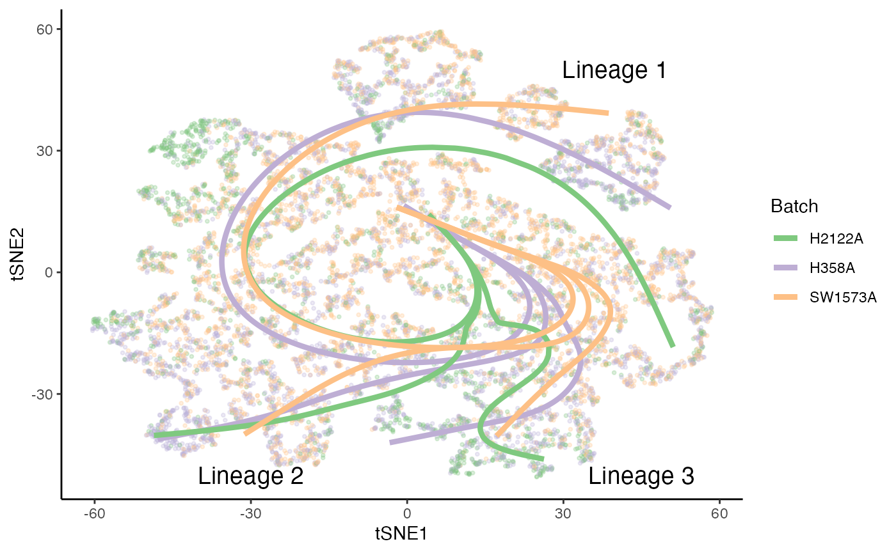
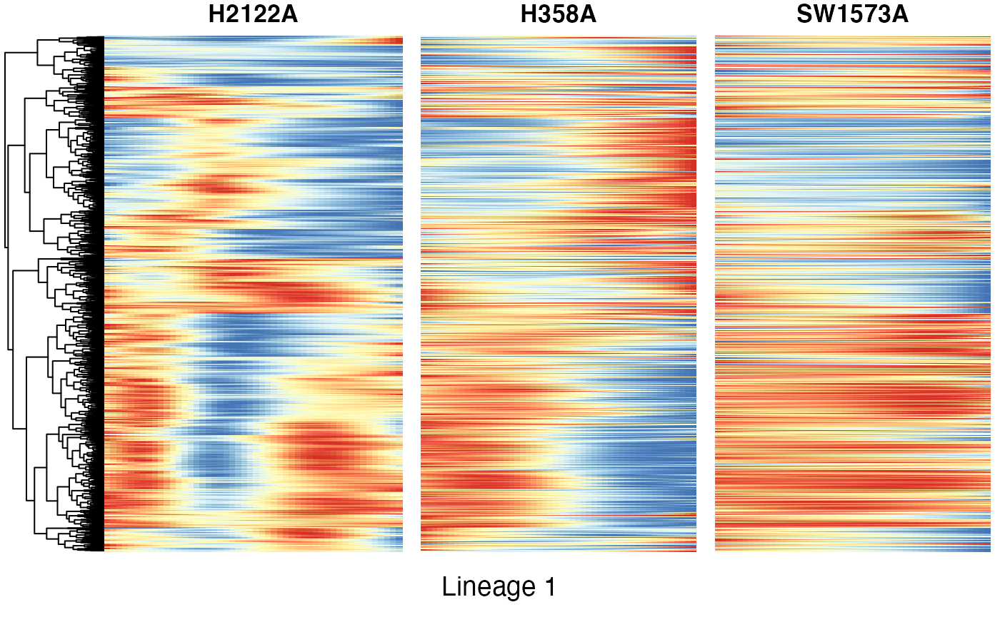
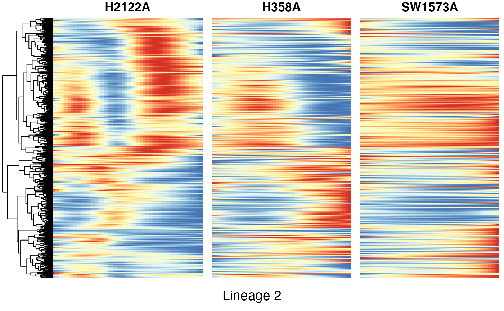

Analysis of the KRAS datataset
Hector Roux de Bézieux
KRAS.RmdLoad data
The dataset we will be working with concerns a single-cell RNA-sequencing dataset consisting of three cancer models under a KRAS(G12C) inhibition (Xue et al. 2020).
libs <- c("here", "dplyr", "tradeSeq", "SingleCellExperiment", "slingshot", "condiments", "scater", "RColorBrewer", "pheatmap", "cowplot", "tidyr") suppressMessages( suppressWarnings(sapply(libs, require, character.only = TRUE)) )
## here dplyr tradeSeq
## TRUE TRUE TRUE
## SingleCellExperiment slingshot condiments
## TRUE TRUE TRUE
## scater RColorBrewer pheatmap
## TRUE TRUE TRUE
## cowplot tidyr
## TRUE TRUErm(libs) theme_set(theme_classic())
kras <- condimentsPaper::import_KRAS()
data("kras", package = "condimentsPaper")
EDA
Reduced dimension coordinates are obtained from the original publication.
cols <- c(brewer.pal(5, "Blues")[2:5], brewer.pal(3, "Greens")[2:3], brewer.pal(3, "Reds")[2:3], brewer.pal(3, "Oranges")[2], "Grey") names(cols) <- c(3, 5, 4, 1, 8, 2, 9, 10, 6, 7) kras$Cluster <- as.character(kras$Cluster) reducedDim(kras, "TSNE") <- colData(kras)[, c("tSNE1", "tSNE2")] %>% as.matrix() df <- colData(kras) %>% as.data.frame() %>% sample_frac(1) p1 <- ggplot(df, aes(x = tSNE1, y = tSNE2, col = Batch)) + geom_point(size = .7) + scale_color_brewer(palette = "Accent") + labs(col = "Type") p1

p2 <- ggplot(df, aes(x = tSNE1, y = tSNE2, fill = Cluster)) + geom_point(size = 1, alpha = .65, col = "grey70", shape = 21) + scale_fill_manual(values = cols) + labs(fill = "Cell Clusters") p2

Imbalance score
kras <- imbalance_score(Object = kras, conditions = "Batch", dimred = "TSNE") df$scores <- kras[, df$X1]$scores$scaled_scores p3 <- ggplot(df, aes(x = tSNE1, y = tSNE2, col = scores)) + geom_point(size = .7) + scale_color_viridis_c(option = "C") + labs(col = "Score") p3

Differential Topology
To estimate the trajectory, we use slingshot (Street et al. 2018).
Fit slingshot
kras <- slingshot(kras, reducedDim = "TSNE", clusterLabels = kras$Cluster, start.clus = 7, extend = "n", reweight = FALSE, reassign = FALSE)
## Using full covariance matrixTopology Test
topologyTest(kras, conditions = "Batch", rep = 50)
## Generating permuted trajectories## Running Classifier test## Loading required package: lattice## method thresh statistic p.value
## 1 Classifier 0.05 0.8934982 0Individual curves
sdss <- slingshot_conditions(kras, kras$Batch, approx_points = FALSE, extend = "n", reweight = FALSE, reassign = FALSE) sdss$condition_id <- names(sdss) sdss$mapping <- matrix(rep(1:3, each = 3), nrow = 3, ncol = 3, byrow = TRUE) sds <- do.call(merge_sds, sdss)
df <- df %>% select(X1, tSNE1, tSNE2, Cluster, Batch) %>% full_join( slingPseudotime(sds) %>% as.data.frame() %>% mutate(X1 = rownames(.)) %>% dplyr::rename("Lineage1" = V1, "Lineage2" = V2, "Lineage3" = V3))
## Joining, by = "X1"df <- df %>% pivot_longer(starts_with("Lineage"), names_to = "Curve", values_to = "pst") p4 <- ggplot(df, aes(x = tSNE1, y = tSNE2, col = Batch)) + geom_point(size = .7, alpha = .1) + scale_color_brewer(palette = "Accent") for (batch in unique(kras$Batch)) { sds_cond <- sdss[[batch]] for (i in 1:3) { p4 <- p4 + geom_path(data = slingCurves(sds_cond)[[i]]$s[slingCurves(sds_cond)[[i]]$ord, ] %>% as.data.frame() %>% mutate(Batch = batch), size = 1.5) } } position <- data.frame( "tSNE1" = c(40, -30, 45), "tSNE2" = c(50, -50, -50), "Batch" = "H2122A", "text" = paste0("Lineage ", 1:3) ) p4 <- p4 + geom_text(data = position, col = "black", aes(label = text), size = 5) p4

p <- ggplot(df, aes(x = tSNE1, y = tSNE2, col = Batch)) + geom_point(size = .7, alpha = .1) + scale_color_brewer(palette = "Accent") cls <- df %>% group_by(Cluster, Batch) %>% dplyr::summarise(tSNE1 = mean(tSNE1), tSNE2 = mean(tSNE2), .groups = NULL)
## `summarise()` regrouping output by 'Cluster' (override with `.groups` argument)p <- p + geom_point(data = cls, size = 3) edges <- lapply(sds@lineages, function(lin) { from <- lin[1:(length(lin) - 1)] to <- lin[2:length(lin)] return(data.frame("from" = from, "to" = to)) }) %>% bind_rows() for (batch in unique(kras$Batch)) { cl_batch <- cls %>% filter(Batch == batch) edges_batch <- left_join(edges, cl_batch, by = c("from" = "Cluster")) %>% left_join(cl_batch %>% dplyr::rename("tSNE1_end" = "tSNE1", "tSNE2_end" = "tSNE2") %>% select(-Batch), by = c("to" = "Cluster") ) p <- p + geom_segment(data = edges_batch, aes(xend = tSNE1_end, yend = tSNE2_end), size = 2) } p
Differential Progression
Test
progressionTest(sds, conditions = kras$Batch, lineages = TRUE)
## lineage statistic p.value
## 1 All 0.8072967 0.000000e+00
## 2 1 0.4931056 2.386905e-36
## 3 2 0.4843639 4.790907e-15
## 4 3 0.4461404 3.889379e-10Plot
p5 <- ggplot(df, aes(x = pst)) + geom_density(alpha = .4, aes(fill = Batch), col = "transparent") + geom_density(aes(col = Batch), fill = "transparent", size = 1.5) + guides(col = FALSE) + scale_fill_brewer(palette = "Accent") + scale_color_brewer(palette = "Accent") + labs(x = "Pseudotime", fill = "Type") + facet_wrap(~ Curve, scales = "free_x") p5

Differential Differentiation
Test
differentiationTest(sds, conditions = kras$Batch, pairwise = TRUE)
## note: only 1 unique complexity parameters in default grid. Truncating the grid to 1 .
##
## note: only 1 unique complexity parameters in default grid. Truncating the grid to 1 .
##
## note: only 1 unique complexity parameters in default grid. Truncating the grid to 1 .
##
## note: only 2 unique complexity parameters in default grid. Truncating the grid to 2 .## pair statistic p.value
## 1 All 0.4819817 6.472572e-38
## 2 1vs2 0.4263036 2.873363e-14
## 3 1vs3 0.4013095 2.594736e-09
## 4 2vs3 0.4906242 2.982134e-20Plot
weights <- condiments:::.sling_reassign(sds) df <- df %>% full_join(weights %>% as.data.frame() %>% mutate(X1 = rownames(.)) %>% dplyr::rename("Lineage1" = V1, "Lineage2" = V2, "Lineage3" = V3) %>% pivot_longer(starts_with("Lineage"), names_to = "Curve", values_to = "weights") )
## Joining, by = c("X1", "Curve")df_w <- df %>% select(-pst) %>% group_by(X1) %>% mutate(weights = weights / sum(weights)) %>% pivot_wider(names_from = "Curve", values_from = "weights") p <- ggplot(df_w, aes(x = Lineage1, y = Lineage3)) + # geom_hex(aes(fill=log(..count..))) + geom_hex() + scale_fill_viridis_c(direction = -1) + facet_wrap(~Batch, scales = "free") + geom_abline(slope = -1, intercept = 1, linetype = "dotted") + geom_abline(slope = -1, intercept = 2/3, linetype = "dotted") + geom_abline(slope = -1, intercept = 1/3, linetype = "dotted") + annotate("text", x = .53, y = .53, label = "w3 = 0", angle = -52) + annotate("text", x = .62, y = .1, label = "w3 = 1/3", angle = -52) + annotate("text", x = .14, y = .14, label = "w3 = 2/3", angle = -52) + theme(legend.position = "bottom") + labs(x = "Weights for Lineage 1 (w1)", y = "Weights for Lineage 2 (w2)", fill = "counts per hexagon") p

df_w <- df %>% select(-pst) %>% group_by(X1) %>% mutate(weights = weights / sum(weights)) %>% ungroup() %>% group_by(Batch, Curve) %>% summarise(weights = mean(weights), .groups = NULL)
## `summarise()` regrouping output by 'Batch' (override with `.groups` argument)p2 <- ggplot(df_w, aes(x = Curve, fill = Batch, y = weights)) + geom_col(position = "dodge") + scale_fill_brewer(palette = "Accent") + theme(legend.position = c(.7, .7)) + labs(x = "", y = "Mean weight") p2
Differential expression
We use tradeSeq (Van den Berge et al. 2020).
set.seed(3) filter <- apply(counts(kras), 1, function(g) { sum(g >= 5) >= 10 }) kras <- kras[filter, ]
Select number of knots
set.seed(3) library(BiocParallel) BPPARAM <- BiocParallel::bpparam() BPPARAM$workers <- 4 icMat <- evaluateK(counts = as.matrix(assays(kras)$counts), pseudotime = slingPseudotime(sds, na = FALSE), cellWeights = weights, conditions = factor(colData(kras)$Batch), nGenes = 300, k = 3:7, parallel = TRUE, BPPARAM = BPPARAM)
Fit GAM
Next, we fit the NB-GAMs using 5 knots, based on the pseudotime and cell-level weights estimated by Slingshot. We use the conditions argument to fit separate smoothers for each condition.
Differential expression between conditions
condRes <- conditionTest(kras, l2fc = log2(2), lineages = TRUE) condRes$padj <- p.adjust(condRes$pvalue, "fdr") mean(condRes$padj <= 0.05, na.rm = TRUE)
## [1] 0.07581454sum(condRes$padj <= 0.05, na.rm = TRUE)
## [1] 363Visualize most and least significant gene
# plot genes scales <- c("#7FC97F", "#57A059", "#2E7935", "#BEAED4", "#9687AC", "#706285", "#FDC086", "#CC945C", "#9D6A34") scales <- scales[c(1, 4, 7, 2, 5, 8, 3, 6, 9)] oo <- order(condRes$waldStat, decreasing = TRUE) # most significant gene p6 <- plotSmoothers(kras, assays(kras)$counts, gene = rownames(assays(kras)$counts)[oo[1]], alpha = 1, curvesCols = scales, sample = .3) + scale_color_manual(values = scales) + ggtitle(rownames(assays(kras)$counts)[oo[1]])
## Scale for 'colour' is already present. Adding another scale for 'colour',
## which will replace the existing scale.# Second most significant gene p7 <- plotSmoothers(kras, assays(kras)$counts, gene = rownames(assays(kras)$counts)[oo[2]], alpha = 1, curvesCols = scales, sample = .3) + scale_color_manual(values = scales) + ggtitle(rownames(assays(kras)$counts)[oo[2]])
## Scale for 'colour' is already present. Adding another scale for 'colour',
## which will replace the existing scale.# least significant gene p8 <- plotSmoothers(kras, assays(kras)$counts, gene = rownames(assays(kras)$counts)[oo[nrow(kras)]], alpha = 1, curvesCols = scales, sample = .3) + scale_color_manual(values = scales) + ggtitle(rownames(assays(kras)$counts)[oo[nrow(kras)]])
## Scale for 'colour' is already present. Adding another scale for 'colour',
## which will replace the existing scale.p6
p7
p8Heatmaps of genes DE between conditions for lineage 1
Below we show heatmaps of the genes DE between conditions. The DE genes in the heatmaps are ordered according to a hierarchical clustering on the TGF-Beta condition.
### based on mean smoother condRes$padj_lineage1 <- p.adjust(condRes$pvalue_lineage1, "fdr") conditionGenes_lineage1 <- rownames(condRes)[condRes$padj_lineage1 <= 0.05] conditionGenes_lineage1 <- conditionGenes_lineage1[!is.na(conditionGenes_lineage1)] yhatSmooth <- predictSmooth(kras, gene = conditionGenes_lineage1, nPoints = 50, tidy = FALSE) %>% log1p() yhatSmoothScaled <- t(apply(yhatSmooth[, c(1:50, 151:200, 301:350)], 1, scales::rescale)) heatSmooth_H2122A <- pheatmap(yhatSmoothScaled[, 1:50], cluster_cols = FALSE, show_rownames = FALSE, show_colnames = FALSE, main = "H2122A", legend = FALSE, silent = TRUE ) matchingHeatmap_H358A <- pheatmap(yhatSmoothScaled[heatSmooth_H2122A$tree_row$order, 51:100], cluster_cols = FALSE, cluster_rows = FALSE, show_rownames = FALSE, show_colnames = FALSE, main = "H358A", legend = FALSE, silent = TRUE ) matchingHeatmap_SW1573A <- pheatmap(yhatSmoothScaled[heatSmooth_H2122A$tree_row$order, 101:150], cluster_cols = FALSE, cluster_rows = FALSE, show_rownames = FALSE, show_colnames = FALSE, main = "SW1573A", legend = FALSE, silent = TRUE ) p9 <- plot_grid(heatSmooth_H2122A[[4]], matchingHeatmap_H358A[[4]], matchingHeatmap_SW1573A[[4]], NULL, NULL, NULL, ncol = 3, rel_widths = c(1.4, 1, 1), rel_heights = c(10, 1)) + draw_text("Lineage 1", x = .5, y = .05) p9

Heatmaps of genes DE between conditions for lineage 2
Below we show heatmaps of the genes DE between conditions. The DE genes in the heatmaps are ordered according to a hierarchical clustering on the TGF-Beta condition.
condRes$padj_lineage2 <- p.adjust(condRes$pvalue_lineage2, "fdr") conditionGenes_lineage2 <- rownames(condRes)[condRes$padj_lineage2 <= 0.05] conditionGenes_lineage2 <- conditionGenes_lineage1[!is.na(conditionGenes_lineage2)] yhatSmooth <- predictSmooth(kras, gene = conditionGenes_lineage2, nPoints = 50, tidy = FALSE) %>% log1p() yhatSmoothScaled <- t(apply(yhatSmooth[, c(51:100, 201:250, 351:400)],1, scales::rescale)) heatSmooth_H2122A <- pheatmap(yhatSmoothScaled[, 1:50], cluster_cols = FALSE, show_rownames = FALSE, show_colnames = FALSE, main = "H2122A", legend = FALSE, silent = TRUE ) matchingHeatmap_H358A <- pheatmap(yhatSmoothScaled[heatSmooth_H2122A$tree_row$order, 51:100], cluster_cols = FALSE, cluster_rows = FALSE, show_rownames = FALSE, show_colnames = FALSE, main = "H358A", legend = FALSE, silent = TRUE ) matchingHeatmap_SW1573A <- pheatmap(yhatSmoothScaled[heatSmooth_H2122A$tree_row$order, 101:150], cluster_cols = FALSE, cluster_rows = FALSE, show_rownames = FALSE, show_colnames = FALSE, main = "SW1573A", legend = FALSE, silent = TRUE ) p10 <- plot_grid(heatSmooth_H2122A[[4]], matchingHeatmap_H358A[[4]], matchingHeatmap_SW1573A[[4]], NULL, NULL, NULL, ncol = 3, rel_widths = c(1.4, 1, 1), rel_heights = c(10, 1)) + draw_text("Lineage 2", x = .5, y = .05) p10

Heatmaps of genes DE between conditions for lineage 3
condRes$padj_lineage3 <- p.adjust(condRes$pvalue_lineage3, "fdr") conditionGenes_lineage3 <- rownames(condRes)[condRes$padj_lineage3 <= 0.05] conditionGenes_lineage3 <- conditionGenes_lineage3[!is.na(conditionGenes_lineage3)] yhatSmooth <- predictSmooth(kras, gene = conditionGenes_lineage3, nPoints = 50, tidy = FALSE) %>% log1p() yhatSmoothScaled <- t(apply(yhatSmooth[, c(101:150, 251:300, 401:450)],1, scales::rescale)) heatSmooth_H2122A <- pheatmap(yhatSmoothScaled[, 1:50], cluster_cols = FALSE, show_rownames = FALSE, show_colnames = FALSE, main = "H2122A", legend = FALSE, silent = TRUE ) matchingHeatmap_H358A <- pheatmap(yhatSmoothScaled[heatSmooth_H2122A$tree_row$order, 51:100], cluster_cols = FALSE, cluster_rows = FALSE, show_rownames = FALSE, show_colnames = FALSE, main = "H358A", legend = FALSE, silent = TRUE ) matchingHeatmap_SW1573A <- pheatmap(yhatSmoothScaled[heatSmooth_H2122A$tree_row$order, 101:150], cluster_cols = FALSE, cluster_rows = FALSE, show_rownames = FALSE, show_colnames = FALSE, main = "SW1573A", legend = FALSE, silent = TRUE ) p11 <- plot_grid(heatSmooth_H2122A[[4]], matchingHeatmap_H358A[[4]], matchingHeatmap_SW1573A[[4]], NULL, NULL, NULL, ncol = 3, rel_widths = c(1.4, 1, 1), rel_heights = c(10, 1)) + draw_text("Lineage 3", x = .5, y = .05) p11

Session info
## R version 4.0.3 (2020-10-10)
## Platform: x86_64-pc-linux-gnu (64-bit)
## Running under: Ubuntu 20.04.1 LTS
##
## Matrix products: default
## BLAS: /usr/lib/x86_64-linux-gnu/openblas-pthread/libblas.so.3
## LAPACK: /usr/lib/x86_64-linux-gnu/openblas-pthread/liblapack.so.3
##
## locale:
## [1] LC_CTYPE=en_US.UTF-8 LC_NUMERIC=C
## [3] LC_TIME=en_US.UTF-8 LC_COLLATE=en_US.UTF-8
## [5] LC_MONETARY=en_US.UTF-8 LC_MESSAGES=en_US.UTF-8
## [7] LC_PAPER=en_US.UTF-8 LC_NAME=C
## [9] LC_ADDRESS=C LC_TELEPHONE=C
## [11] LC_MEASUREMENT=en_US.UTF-8 LC_IDENTIFICATION=C
##
## attached base packages:
## [1] parallel stats4 stats graphics grDevices utils datasets
## [8] methods base
##
## other attached packages:
## [1] caret_6.0-86 lattice_0.20-41
## [3] tidyr_1.1.0 cowplot_1.0.0
## [5] pheatmap_1.0.12 RColorBrewer_1.1-2
## [7] scater_1.16.2 ggplot2_3.3.1
## [9] condiments_0.1.0 slingshot_1.6.1
## [11] princurve_2.1.5 SingleCellExperiment_1.10.1
## [13] SummarizedExperiment_1.18.2 DelayedArray_0.14.1
## [15] matrixStats_0.57.0 Biobase_2.48.0
## [17] GenomicRanges_1.40.0 GenomeInfoDb_1.24.2
## [19] IRanges_2.22.2 S4Vectors_0.26.1
## [21] BiocGenerics_0.34.0 tradeSeq_1.5.07
## [23] dplyr_1.0.0 here_0.1
## [25] knitr_1.28
##
## loaded via a namespace (and not attached):
## [1] VGAM_1.1-4 plyr_1.8.6
## [3] igraph_1.2.5 splines_4.0.3
## [5] BiocParallel_1.22.0 densityClust_0.3
## [7] fastICA_1.2-2 digest_0.6.27
## [9] foreach_1.5.0 htmltools_0.4.0
## [11] viridis_0.5.1 magrittr_2.0.1
## [13] memoise_1.1.0 tensor_1.5
## [15] cluster_2.1.0 limma_3.44.3
## [17] recipes_0.1.12 gower_0.2.1
## [19] docopt_0.7.1 pkgdown_1.5.1
## [21] colorspace_2.0-0 ggrepel_0.8.2
## [23] xfun_0.14 hexbin_1.28.1
## [25] sparsesvd_0.2 crayon_1.3.4
## [27] RCurl_1.98-1.2 spatstat_1.64-1
## [29] spatstat.data_1.4-3 survival_3.1-12
## [31] iterators_1.0.12 ape_5.4-1
## [33] glue_1.4.2 polyclip_1.10-0
## [35] gtable_0.3.0 ipred_0.9-9
## [37] zlibbioc_1.34.0 XVector_0.28.0
## [39] Ecume_0.9.0 BiocSingular_1.4.0
## [41] kernlab_0.9-29 abind_1.4-5
## [43] scales_1.1.1 edgeR_3.30.3
## [45] Rcpp_1.0.5 viridisLite_0.3.0
## [47] rsvd_1.0.3 lava_1.6.7
## [49] prodlim_2019.11.13 FNN_1.1.3
## [51] ellipsis_0.3.1 farver_2.0.3
## [53] pkgconfig_2.0.3 nnet_7.3-14
## [55] deldir_0.1-25 locfit_1.5-9.4
## [57] labeling_0.4.2 tidyselect_1.1.0
## [59] rlang_0.4.10 reshape2_1.4.4
## [61] munsell_0.5.0 tools_4.0.3
## [63] generics_0.1.0 evaluate_0.14
## [65] stringr_1.4.0 yaml_2.2.1
## [67] goftest_1.2-2 ModelMetrics_1.2.2.2
## [69] transport_0.12-2 fs_1.4.1
## [71] DDRTree_0.1.5 randomForest_4.6-14
## [73] purrr_0.3.4 RANN_2.6.1
## [75] pbapply_1.4-3 nlme_3.1-151
## [77] monocle_2.16.0 slam_0.1-48
## [79] compiler_4.0.3 rstudioapi_0.13
## [81] beeswarm_0.2.3 e1071_1.7-3
## [83] spatstat.utils_1.17-0 tibble_3.0.1
## [85] stringi_1.5.3 desc_1.2.0
## [87] Matrix_1.2-18 HSMMSingleCell_1.8.0
## [89] vctrs_0.3.1 pillar_1.4.4
## [91] lifecycle_0.2.0 combinat_0.0-8
## [93] BiocNeighbors_1.6.0 data.table_1.12.8
## [95] bitops_1.0-6 irlba_2.3.3
## [97] R6_2.5.0 gridExtra_2.3
## [99] vipor_0.4.5 codetools_0.2-18
## [101] MASS_7.3-51.6 assertthat_0.2.1
## [103] rprojroot_2.0.2 withr_2.3.0
## [105] qlcMatrix_0.9.7 GenomeInfoDbData_1.2.3
## [107] mgcv_1.8-33 grid_4.0.3
## [109] rpart_4.1-15 timeDate_3043.102
## [111] class_7.3-17 rmarkdown_2.2
## [113] DelayedMatrixStats_1.10.1 Rtsne_0.15
## [115] pROC_1.16.2 lubridate_1.7.8
## [117] ggbeeswarm_0.6.0References
Street, Kelly, Davide Risso, Russell B. Fletcher, Diya Das, John Ngai, Nir Yosef, Elizabeth Purdom, and Sandrine Dudoit. 2018. “Slingshot: cell lineage and pseudotime inference for single-cell transcriptomics.” BMC Genomics 19 (1): 477. https://doi.org/10.1186/s12864-018-4772-0.
Van den Berge, Koen, Hector Roux de Bézieux, Kelly Street, Wouter Saelens, Robrecht Cannoodt, Yvan Saeys, Sandrine Dudoit, and Lieven Clement. 2020. “Trajectory-based differential expression analysis for single-cell sequencing data.” Nature Communications 11 (1): 1201. https://doi.org/10.1038/s41467-020-14766-3.
Xue, Jenny Y., Yulei Zhao, Jordan Aronowitz, Trang T. Mai, Alberto Vides, Besnik Qeriqi, Dongsung Kim, et al. 2020. “Rapid non-uniform adaptation to conformation-specific KRAS(G12C) inhibition.” Nature 577 (7790): 421–25. https://doi.org/10.1038/s41586-019-1884-x.